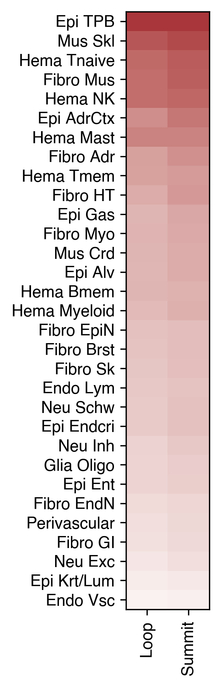

5. Loop dmr enrichment#
Part of the Fig. 5 chapter — see it for the panel-by-panel map. The first code cell sets ENTEX_ROOT and activates the no-overwrite guard (see the Reproduction guide). Outputs shown are the author’s original run.
# === Reproduction setup — edit ENTEX_ROOT / REF_ROOT for your machine ===
import os, sys
ENTEX_ROOT = os.environ.get('ENTEX_ROOT', '/large_storage/zhoulab/zhoujt/project/ENTEx')
REF_ROOT = os.environ.get('REF_ROOT', '/large_storage/zhoulab/ref')
BOOK_ROOT = os.environ.get('BOOK_ROOT', f'{ENTEX_ROOT}/analysis/HumanCellEpigenomeAtlas')
sys.path.insert(0, BOOK_ROOT)
os.chdir(f'{ENTEX_ROOT}/analysis') # original working directory
import repro_guard # no-overwrite guard (default: skip existing)
cd /large_storage/zhoulab/zhoujt/project/ENTEx/
for i in `seq 0 35`; do
if test -e "DMR/majortype-subtype/c${i}_dmr.bed"; then
awk '{printf("%s\t%d\t%d\n%s\t%d\t%d\n",$1,$2,$3,$4,$5,$6)}' loop/majortype/c${i}/c${i}.loop_summit.bedpe | sort -k1,1 -k2,2n -u > tmp.txt;
echo c${i} $(bedtools intersect -wa -a DMR/majortype-subtype/c${i}_dmr.bed -b tmp.txt | sort -k1,1 -k2,2n -u | wc -l) $(cat DMR/majortype-subtype/c${i}_dmr.bed | wc -l) $(cat tmp.txt | wc -l);
fi;
done | awk '{printf("%s\t%d\t%d\t%d\n",$1,$2,$3,$4)}' > analysis/loop_dmr_enrich/subtype_dmr_loop_summit.txt
for i in `seq 0 35`; do
if test -e "DMR/majortype-subtype/c${i}_dmr.bed"; then
awk '{printf("%s\t%d\t%d\n%s\t%d\t%d\n",$1,$2,$3,$4,$5,$6)}' loop/majortype/c${i}/c${i}.loop.bedpe | sort -k1,1 -k2,2n -u > tmp.txt;
echo c${i} $(bedtools intersect -wa -a DMR/majortype-subtype/c${i}_dmr.bed -b tmp.txt | sort -k1,1 -k2,2n -u | wc -l) $(cat DMR/majortype-subtype/c${i}_dmr.bed | wc -l) $(cat tmp.txt | wc -l);
fi;
done | awk '{printf("%s\t%d\t%d\t%d\n",$1,$2,$3,$4)}' > analysis/loop_dmr_enrich/subtype_dmr_loop.txt
bedtools merge -i /large_storage/zhoulab/ref/blacklist/hg38_bismark_loop_blacklist.bed | bedtools slop -i - -g /large_storage/zhoulab/ref/hg38/fasta/hg38.chrom.sizes -b 70000 | awk '$1!="chrX"' | bedtools intersect -wa -a /large_storage/zhoulab/ref/hg38/fasta/hg38.main.10kbin.bed -b - -v | sort -k1,1 -k2,2n -u | awk '($1!="chrX") && ($1!="chrY")' > /large_storage/zhoulab/ref/hg38/fasta/hg38.auto.anchor.bed
for i in `seq 0 35`; do
if test -e "DMR/majortype-subtype/c${i}_dmr.bed"; then
awk '{printf("%s\t%d\t%d\n%s\t%d\t%d\n",$1,$2,$3,$4,$5,$6)}' loop/majortype/c${i}/c${i}.loop_summit.bedpe | sort -k1,1 -k2,2n -u > tmp.txt;
echo c${i} $(bedtools intersect -wa -a tmp.txt -b DMR/majortype-subtype/c${i}_dmr.bed | sort -k1,1 -k2,2n -u | wc -l) $(bedtools intersect -wa -a /large_storage/zhoulab/ref/hg38/fasta/hg38.auto.anchor.bed -b DMR/majortype-subtype/c${i}_dmr.bed | sort -k1,1 -k2,2n -u | wc -l) $(cat tmp.txt | wc -l);
fi;
done | awk '{printf("%s\t%d\t%d\t%d\n",$1,$2,$3,$4)}' > analysis/loop_dmr_enrich/loop_summit_subtype_dmr.txt
for i in `seq 0 35`; do
if test -e "DMR/majortype-subtype/c${i}_dmr.bed"; then
awk '{printf("%s\t%d\t%d\n%s\t%d\t%d\n",$1,$2,$3,$4,$5,$6)}' loop/majortype/c${i}/c${i}.loop.bedpe | sort -k1,1 -k2,2n -u > tmp.txt;
echo c${i} $(bedtools intersect -wa -a tmp.txt -b DMR/majortype-subtype/c${i}_dmr.bed | sort -k1,1 -k2,2n -u | wc -l) $(bedtools intersect -wa -a /large_storage/zhoulab/ref/hg38/fasta/hg38.auto.anchor.bed -b DMR/majortype-subtype/c${i}_dmr.bed | sort -k1,1 -k2,2n -u | wc -l) $(cat tmp.txt | wc -l);
fi;
done | awk '{printf("%s\t%d\t%d\t%d\n",$1,$2,$3,$4)}' > analysis/loop_dmr_enrich/loop_subtype_dmr.txt
import os
import numpy as np
import pandas as pd
from glob import glob
from scipy.sparse import csr_matrix
from scipy.stats import zscore
from concurrent.futures import ProcessPoolExecutor, as_completed
import anndata
from ALLCools.mcds import MCDS, RegionDS
from ALLCools.clustering import *
from ALLCools.plot import *
import seaborn as sns
import matplotlib as mpl
import matplotlib.pyplot as plt
mpl.style.use('default')
mpl.rcParams['pdf.fonttype'] = 42
mpl.rcParams['ps.fonttype'] = 42
mpl.rcParams['font.family'] = 'sans-serif'
mpl.rcParams['font.sans-serif'] = 'Helvetica'
import warnings
warnings.filterwarnings("ignore")
indir = f'{ENTEX_ROOT}/'
outdir = f'{indir}analysis/loop_dmr_enrich/'
L1_meta = pd.read_csv(f'{indir}L1color.tsv', sep='\t', header=0, index_col=0)
# L1_meta = L1_meta.drop(['c35', 'c36'], axis=0)
L1_meta = L1_meta.drop(['c7'], axis=0)
L1_annot = L1_meta['L1_abbr'].to_dict()
L1_color = L1_meta['color'].to_dict()
import cooler
chrom_size_path = f'{REF_ROOT}/hg38/fasta/hg38.main.chrom.sizes'
chrom_sizes = cooler.read_chromsizes(chrom_size_path, all_names=True)
chrom_sizes = chrom_sizes.iloc[:22]
tot_bin = 249871
data1 = pd.read_csv(f'{outdir}loop_summit_subtype_dmr.txt', sep='\t', header=None, index_col=0, names=['L1','dmrsummit','dmrbin','summit'])
data2 = pd.read_csv(f'{outdir}loop_subtype_dmr.txt', sep='\t', header=None, index_col=0, names=['L1','dmrloop','dmrbin','loop'])
data = pd.concat([data1, data2.drop('dmrbin', axis=1)], axis=1)
data
| dmrsummit | dmrbin | summit | dmrloop | loop | |
|---|---|---|---|---|---|
| L1 | |||||
| c0 | 10190 | 95679 | 15963 | 33822 | 56841 |
| c1 | 4805 | 63052 | 9755 | 17250 | 36761 |
| c2 | 478 | 10142 | 2450 | 1699 | 9024 |
| c3 | 6570 | 200197 | 7567 | 24833 | 29387 |
| c4 | 2358 | 12218 | 26891 | 7217 | 90783 |
| c5 | 921 | 20289 | 3253 | 3353 | 12870 |
| c6 | 15457 | 147886 | 20729 | 49863 | 69727 |
| c8 | 7632 | 43111 | 32556 | 22902 | 101295 |
| c9 | 1239 | 9324 | 13206 | 4099 | 51032 |
| c10 | 37304 | 134756 | 56890 | 89972 | 144081 |
| c11 | 1454 | 13050 | 14198 | 4486 | 49756 |
| c12 | 6790 | 105354 | 12634 | 22595 | 43970 |
| c13 | 9612 | 51759 | 31156 | 27833 | 96939 |
| c14 | 12392 | 60677 | 36876 | 35446 | 112133 |
| c15 | 1072 | 5176 | 16939 | 3261 | 56522 |
| c16 | 20883 | 96099 | 38132 | 56149 | 110912 |
| c17 | 3229 | 14854 | 35362 | 8721 | 99772 |
| c18 | 32077 | 169358 | 41327 | 87896 | 116486 |
| c19 | 14144 | 48334 | 56893 | 33171 | 137611 |
| c20 | 7109 | 43147 | 23930 | 22750 | 82314 |
| c21 | 11244 | 68358 | 27731 | 32075 | 83847 |
| c23 | 8948 | 45532 | 32483 | 24497 | 93298 |
| c24 | 438 | 2925 | 16231 | 1468 | 53968 |
| c26 | 3237 | 37492 | 12503 | 11167 | 46002 |
| c27 | 1423 | 12409 | 10080 | 4998 | 37368 |
| c28 | 2803 | 10956 | 41589 | 7182 | 110274 |
| c29 | 5216 | 49490 | 12512 | 16789 | 44985 |
| c32 | 396 | 5655 | 5813 | 1208 | 19858 |
| c33 | 283 | 2127 | 22640 | 841 | 69411 |
| c34 | 2117 | 10444 | 28907 | 5691 | 82794 |
| c35 | 1365 | 19122 | 10787 | 4850 | 39316 |
from scipy.stats import chi2_contingency
from statsmodels.stats.multitest import multipletests as FDR
for t in ['loop','summit']:
stats = []
for xx,yy,zz in data[[f'dmr{t}','dmrbin',t]].values:
_,pv,*_ = chi2_contingency([[xx,zz-xx],[yy,tot_bin-yy]])
stats.append(pv)
data[f'{t}odd'] = data[f'dmr{t}'] / data[t] / data['dmrbin'] * tot_bin
data[f'{t}fdr'] = FDR(stats, alpha=0.05, method='fdr_bh')[1]
L1_meta = L1_meta.loc[L1_meta.index.isin(data.index)]
rorder = data[['loopodd', 'summitodd']].mean(axis=1).sort_values().index[::-1]
fig, ax = plt.subplots(figsize=(2,6), dpi=300)
ax.imshow(np.log2(data.loc[rorder, ['loopodd', 'summitodd']]),
cmap='vlag', vmax=2, vmin=-2, rasterized=True, aspect='auto', interpolation='none')
ax.set_yticks(np.arange(data.shape[0]))
ax.set_yticklabels(rorder.map(L1_annot))
ax.set_xticks([0,1])
ax.set_xticklabels(['Loop','Summit'], rotation=90)
fig.tight_layout()
fig.savefig(f'{outdir}loop_summit_subtypedmr_enrich.pdf', transparent=True)

data['dmrloop'] / data['dmrbin'] / data['loop'] * 249871
L1
c0 1.553949
c1 1.859597
c2 4.638596
c3 1.054708
c4 1.625803
c5 3.208560
c6 1.208276
c8 1.310428
c9 2.152529
c10 1.157893
c11 1.726311
c12 1.218767
c13 1.386090
c14 1.301744
c15 2.785190
c16 1.316317
c17 1.470382
c18 1.113283
c19 1.246145
c20 1.600564
c21 1.398317
c23 1.440919
c24 2.323698
c26 1.617846
c27 2.693243
c28 1.485375
c29 1.884324
c32 2.687910
c33 1.423364
c34 1.644518
c35 1.611963
dtype: float64